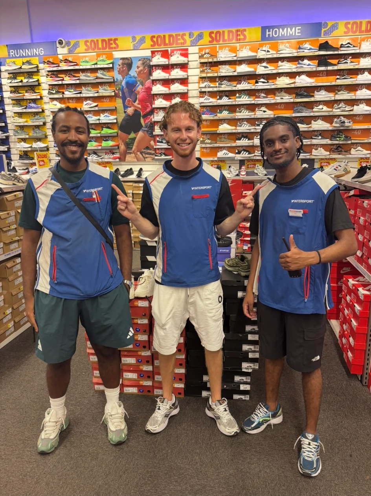

Intersport Marseille Grand Littoral
Alternant vendeur-conseil au rayon chaussures. Analyse des performances, merchandising, réimplantation, stocks, promotions et formation de collaborateurs.
À propos
Après un BTS MCO, j’ai intégré le BUT Techniques de Commercialisation afin de renforcer mes compétences en marketing, vente, merchandising, pilotage et management.

Profil
J’ai construit une solide expérience dans le commerce à travers Leclerc, Manhattan Hot Dog et surtout Intersport Marseille Grand Littoral.
Mon alternance chez Intersport est l’expérience la plus structurante de mon parcours. Elle m’a donné une vision complète d’un point de vente spécialisé : conseil, stocks, réception, merchandising, suivi des performances et accompagnement des nouveaux collaborateurs.
Expériences
Alternant vendeur-conseil au rayon chaussures. Analyse des performances, merchandising, réimplantation, stocks, promotions et formation de collaborateurs.
Gestion de stands lors de grands événements nationaux : vente, relation client, approvisionnements, organisation et management opérationnel.
Membre du pôle Expérience Client : fonctionnement de l’épicerie, accompagnement d’étudiants, animation de la vie du lieu et distribution solidaire.
Expérience en caisse et mise en rayon, avec un premier apprentissage des exigences de la grande distribution.
Qualités professionnelles
Projet professionnel
Je souhaite participer au développement de grandes marques sportives en accompagnant leur croissance auprès des enseignes et des points de vente. Mes expériences chez Intersport ont renforcé mon intérêt pour les produits, les stratégies de marque et la performance commerciale.
À la rentrée 2026, j’intégrerai le Programme Grande École de KEDGE Business School à Marseille afin d’approfondir ma vision stratégique tout en poursuivant mon expérience terrain.
Télécharger mon CV public